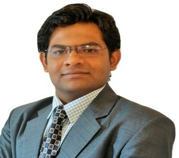

CURRICULAM VITAE |
|---|

Personal DetailsFirst and Last Name: Ravikumar Mevada Birthdate: 27 January 1992 Place of Birth: Ahmedabad,India Nationality: Indian Marital Status: Single Email: mevada.ravikumar@gmail.com Mobile Number: +49 (0) 176 69001315 Postal Address: Kreuzeck Straße 5, 85354, Freising
Work Experiance09/2018 till 08/2019 Fraunhofer IVV, Freising, Germany Research Assistant (HIWI)Responsibilities: Signal Processing of Physiological Sensors in LabChart Software, Writing Macros in Visual Basic for further Signal Processing in LabChart, Communication of LabChart with Python and then to Arduino to Operate Olfactometer (Arduino Uno, L298 Driver, 12V solenoid valve), User-friendly Software to Control the Operation in Python Education and Training10/2014 till 02/2019 Ernst Abbe Hochschule, Jena, Germany Master of Science (M.Sc.) in Scientific Instrumentation, Main Subjects: Embedded Digital System, Optical Instruments, 3 D Designs (Autodesk Inventor), FEM and Simulation (ANSYS), Selected Topics of Sensors (2.4 / 5) 03/2018 till 08/2018 Fraunhofer IVV, Freising, Germany Master Thesis, Development to Couple a Gustometer with an Olfactometer using Python, Major Task: Video Recording in Python using OpenCV via Multi-threading, Data Management in Python with Excel using Openpyxl, Construction of the Olfactometer Heating System and PID Programming in Arduino IDE, Calibration and Optimization of the System Hardware and Software 07/2017 till 01/2018 Fraunhofer IVV, Freising, Germany Practical Internship, Triggering of the Gustometer from Python, Major Task: Creation of the Library of C Wrapper for C++ Class Member Functions or API of Gustometer’s (CETONI GmbH) Pump, Valve, Digital IO, Error and Qmix TC Modules using Python’s CFFI Library, Triggering of the Gustometer from Python, Generating GUIs in Python using Tkinter library, Designing of the Gustometer Stand and Mouthpiece in Autodesk Inventor 07/2009 till 05/2013 L. D. College of Engineering, Ahmedabad Bachelor of Engineering in Instrumentation and Control, Main Subjects: Bio-medical Instrumentation, Microcontroller, Microprocessor, Sensor and Signal Conditioning, Motion Control, SPS Programming, Control System Components, Industrial Measurement, Control System Design, Bus Communication (7.88 CGPA) 07/2012 till 05/2013 KHS Machinery Pvt. Ltd, Ahmedabad, India Bachelor Thesis, Automated Storage and Retrieve System, Main Task: PLC Programming of DC Motors and Photo Sensors for the Three Axis Motion of the Robot (S7 and WinCC) Personal SkillsLanguages
Digital Skills
|